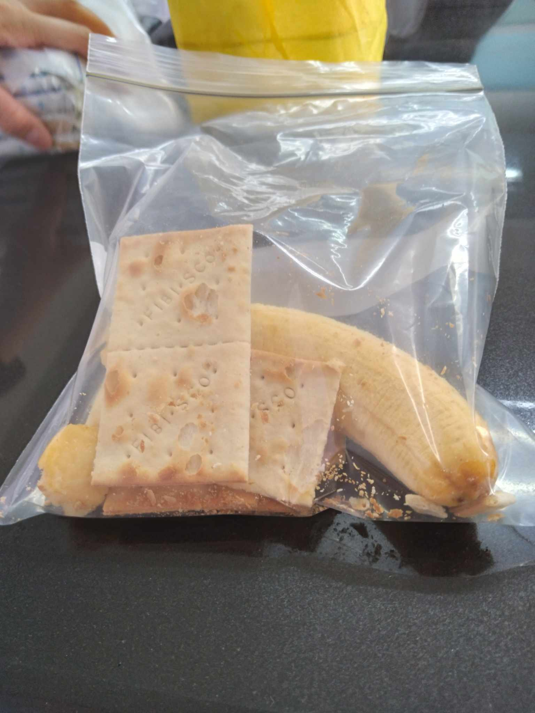

Figure 2: Our starting Setup for the Crushing Stage
When we put the bananas and crackers in the zip lock, the food we put in seems to represent our food bolus. Once it goes out of the esophagus, it will fall into the stomach to start the digestion stage.